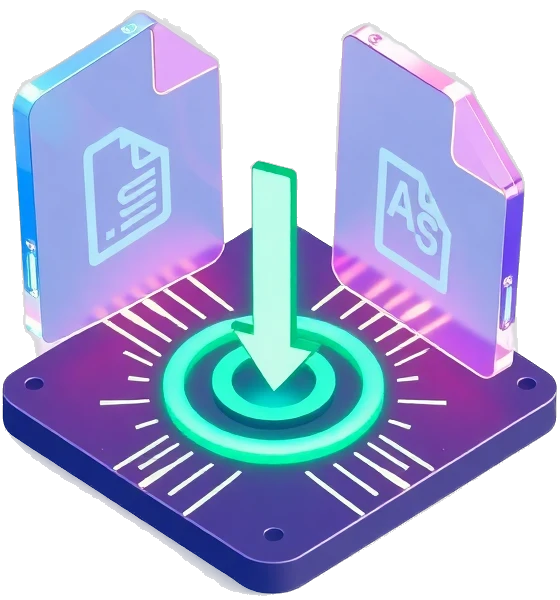

فایل خود را اینجا رها کنید
پشتیبانی از ۱۲۰ فرمت مختلف (تصویر، ویدیو، صدا و سند)

Developed By
سید آروین موسوی
پشتیبانی از ۱۲۰ فرمت مختلف (تصویر، ویدیو، صدا و سند)
مبدل آنلاین فایل یک ابزار قدرتمند و کاربردی برای تبدیل انواع فایلها به فرمتهای مختلف بهصورت آنلاین است. با استفاده از این سرویس میتوانید بدون نیاز به نصب هیچگونه نرمافزار و تنها از طریق مرورگر، فایلهای خود را با سرعت بالا، کیفیت عالی و امنیت کامل تبدیل کنید.
یکی از مهمترین مزایای این مبدل فایل، عدم نیاز به نصب برنامه یا نرمافزار جانبی است. تمامی مراحل تبدیل فایل بهصورت آنلاین انجام میشود و شما میتوانید از طریق موبایل، تبلت یا کامپیوتر بهراحتی از این سرویس استفاده کنید.
حفظ امنیت و حریم خصوصی کاربران از اولویتهای اصلی این وبسایت است. فایلها فقط برای عملیات تبدیل استفاده میشوند، هیچ فایلی بهصورت دائمی ذخیره نمیشود و پس از مدت کوتاهی بهصورت خودکار حذف میشوند.
توسعه دهنده
سید آروین موسوی
چه بخواهید یک فایل PDF را به Word تبدیل کنید، چه یک تصویر را به PDF یا یک ویدئو را به MP3، این وبسایت یک راهحل سریع، ساده و قابل اعتماد برای تمامی نیازهای شما در زمینه تبدیل فایل است.